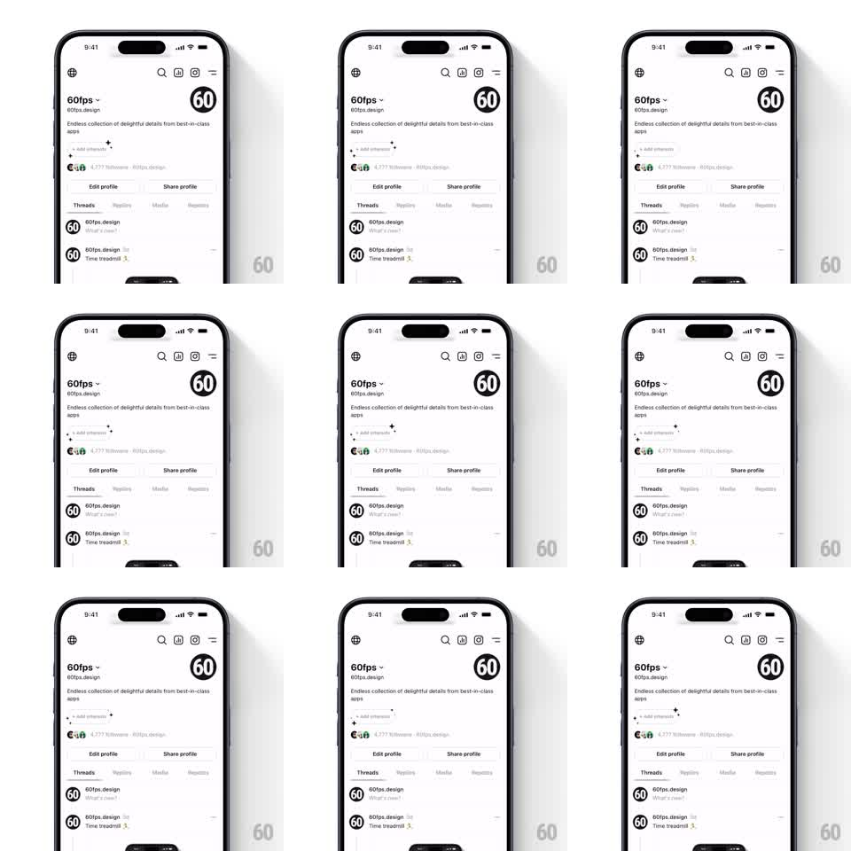

Media
Frame-by-frame

Rebuild this animation 1:1: Threads' profile nudge - small four-point sparkles twinkle in a loop around the "+ Add interests" pill under the bio, drawing the eye without touching anything else.

Rebuild this animation 1:1: Threads' profile nudge - small four-point sparkles twinkle in a loop around the "+ Add interests" pill under the bio, drawing the eye without touching anything else. ## Integration Integration: stack-agnostic spec - springs given as stiffness/damping, timed motions as duration + curve; map every value to your framework and animation library of choice. ## Scene A Threads profile page (avatar, handle, bio, follower row, Edit profile / Share profile buttons, tabs). Between the bio and the follower row sits the "+ Add interests" text pill. Around it, 3-4 tiny four-point star sparkles appear, twinkle, and vanish at staggered offsets. ## Motion spec Pattern: ambient looping sparkle cluster around a static pill. - Each sparkle runs a 900ms lifecycle: scale 0 -> 1 with a 45deg rotation (spring ~400/16, first 350ms), holds ~200ms, then shrinks and fades out (300ms). - Sparkles are staggered ~400ms apart around fixed anchor points: above-right, left edge, below-left, and top-left of the pill, so one is always mid-twinkle. - Sizes vary (8-14pt) and one sparkle per cycle is brighter/larger - the "hero" twinkle. - The pill and the rest of the profile never move; the loop repeats seamlessly every ~2.4s. ## Calibration - This is ambient: sparkles are thin-line, low-contrast, and small - a glint, not confetti. - Never overlap the pill's text; sparkles orbit its perimeter. ## Reduced motion A single static sparkle beside the pill; no loop. ## Don't miss - Sparkles are four-point stars (concave sides), not asterisks or dots. - The loop's rhythm feels organic: anchors fixed, but phase offsets keep it from looking metronomic.